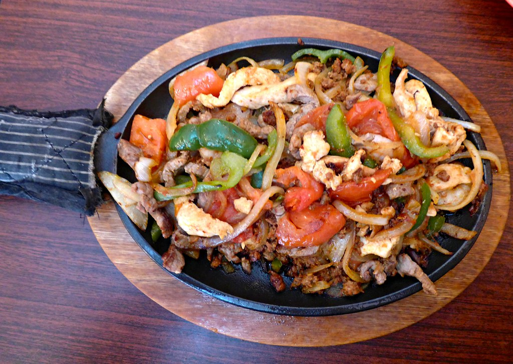

Cast Iron Fajitas

Ingredients
These are the ingredients that will be needed for this recipe:
Marinade & Meat:
- 1/4 cup olive oil
- 2 tablespoons freshly squeezed lime juice
- 1 tablespoon chili powder
- 2 teaspoons ground cumin
- 2 teaspoons garlic powder
- 1 teaspoon salt
- 1/2 teaspoon ground black pepper
- 1 pound skinless, boneless chicken breasts
Vegetables:
- 1 tablespoon olive oil
- 1 large onion, sliced
- 1 large red bell pepper, sliced
- 1 large green bell pepper, sliced
Cooking Directions
Follow these steps to make this delicious food:
- Make marinade: Combine olive oil, lime juice, chili powder, cumin, garlic powder, salt and pepper in a bowl. Add chicken and toss until well coated. Cover the bowl and refrigerate, 4 hours to overnight.
- Heat a cast iron skillet over medium-high heat. Add chicken to the hot skillet, reserving marinade. Cook until no longer pink in the center and the juices run clear, 6 to 8 minutes per side. An instant read thermometer inserted into the center should read at least 165 degrees F (74 degrees C). Remove chicken from the skillet, slice and set aside.
- Cook Vegetables: Heat olive oil in the same skillet. Add onion, bell peppers and reserved marinade. Cook and stir until vegetables are soft and tender, 5 to 7 minutes.
- Add chicken back to the skillet; cook and stir until warmed through, 2 to 4 minutes.